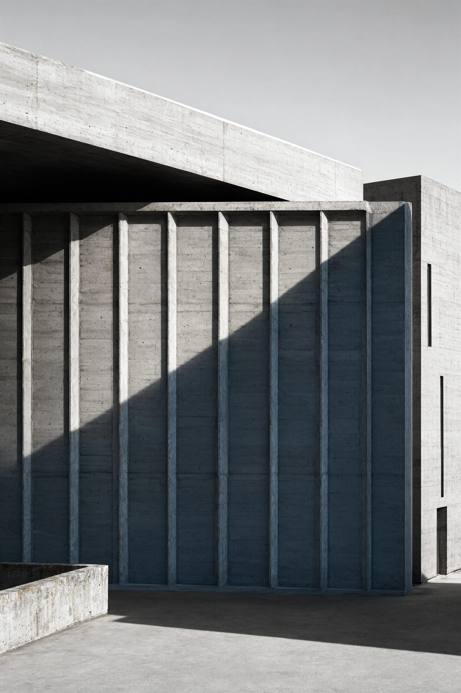

← все работы
сайт
2024
6 недель
арка
Архитектурное бюро, четыре-шесть проектов в год. Сайт был архивом PDF: чтобы понять, что бюро умеет, нужно было скачать три файла и не бросить на втором.

arka
сайт бюро · 6 проектов
2024
2024
задача
проект как лист
из альбома
Архитекторы умеют показывать работу на бумаге: план, разрез, фотография, короткая подпись. На сайте этого не было — только список файлов и общее «мы строим индивидуальные пространства».
Сделали сетку, похожую на чертёжный лист: строгие поля, тонкие линии, крупные фотографии и факты в одну строку — площадь, год, город. Никаких каруселей и всплывающих окон: один проект — один экран, листается как альбом.
У архитектуры нет текста. Сайт должен вести себя так же: показывать и не мешать.
аркабюро
дом
на склоне
на склоне
Жилой дом на южном склоне. Бетон, сосна, два двора и лестница вместо коридора.
240 м² · 202401 / 06
Аа
Unboundedназвания проектов
Onestфакты и текст
главная · сетка
01
из шести
из шести
- 6проектов описаны по одной схеме — новый добавляется за час
- 2недели на дизайн всех страниц
- ×2,8время на сайте по сравнению со старой версией
Нужен сайт, который показывает работу, а не рассказывает о ней?
написать в telegram